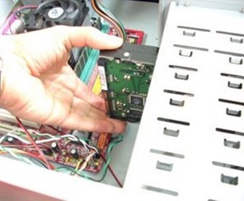
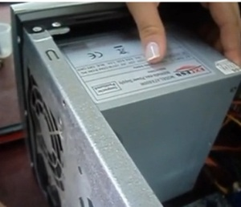

DESMONTAJE DEL COMPUTADOR:
1.Apague y Desconecte la energía de su computador con mucho cuidado y todos los dispositivos periféricos del computado como son el cable de fuente de poder, el ratón el teclado, el mouse, el escanear, la impresora etc.
2.Es importante tener en cuenta un espacio amplio para ubicar la Torre y empezar con su desmontaje.
3.Nos disponemos a quitar los tonillos de cada tapa lateral o gabinete, con ayuda del destornillador que utilizaremos a lo largo del desmontaje.
4Quitaremos los tornillos le ponemos una cinta con el nombre de donde los sacaste para que te quede más fácil de ubicar los cuando lo vayas a ensamblar de nuevo, deslizamos las tapas hacia atrás y las ubicamos en un lugar en el que no molesten..
5.Ir quitando cada parte y tomar nota de donde van colocados los componentes, con el fin de poseer un respaldo de la forma en la que van colocados para luego no tener inconvenientes al momento de rearmar el computador.
6.Se procede a desconectar el cable q le da energía a la board, luego el q evita corto circuitos, el de la unidad de CD, el de nuestro floppy y el ultimo el de nuestro disco duro ahora quedan desconectados nuestros cables de energia.
7.Ahora desconectaremos los buses de datos y empezaremos por la unidad de CD y después desconectarlo de nuestro floppy y luego el disco duro que es SATA y así desconectamos todos nuestros buses de datos. En este caso por seguridad no se lo debe hacer de no ser necesario, porqué la desconectar este tipo de dispositivos sino se tiene información de cómo es su estructura y ubicación que respalde el desmontaje se corre el riesgo de conectarlos de manera incorrecta y de que el computador funcione mal.
8.Extraer nuestra unidad de CD –ROM o almacenamiento.
9.Extraer la unidad de floppy destornillamos y tenemos cuidado con los tornillos y la extraemos al exterior de nuestro computador.
10.Extraer Disco Duro
11.Quitar la memoria RAM, Con mucho cuidado sacamos también las memorias de sus respectivas ranuras y quitándole el seguro, tomándolas si es posible del borde para no tocar el circuito, evitando que sufra algún desperfecto.
12.Quitar la tarjeta de vídeo se encuentra una ranura PSI y luego la tarjeta de red.
13.Quitar el disipador, primero quitar el cable que le da energia.
14.Luego quitar el procesador en nuestro (caso no lo hicimos) , Al momento de extraer el procesador (según el profesor) se destaca la importancia de una manilla antiestática, para evitar que nuestra energia le haga algún daño. Primero extraemos el ventilador que lo cubre y luego levantamos la pan quita de sujeción para extraer la CPU ubicándola en un lugar especial y seguro mientras extraer los demás componentes.
15.Desconectar cables de encendido, sonido y puertos USB.
16.Quitar la fuente de poder.
17.Quitar la board y tener cuidado con cada parte de ella.
18.Acabar de quitar todos los componentes hasta dejarlo vacío y limpiado.
MONTAJE O ENSAMBLE DEL COMPUTADOR:
1.Verificamos que todos los componentes necesarios para armar la PC estén disponible en orden y etiquetados según donde vayan.
2.Si se realizó tomar nota de cómo se encontraban los componentes en este momento servirán de ayuda.
3.Alinee los orificios de los tornillos de la fuente de energia con los del gabinete.
4.Instalación de la tarjeta madre O BOARD en el gabinete de la PC se recomienda hacer una breve limpieza.
5.Colocar la fuente de poder con sus respectivos tornillos.
6.Colocar la unidad de CD y atornillamos muy bien.
7.Ubicar la unidad de floppy.
8.Poner la unidad de disco duro.
9.Conectar nuestros buses de datos y comenzaremos por la unidad de CD.
10.Luego el bus de datos del floppy.
11.Luego con nuestro disco duro.
12.Colocar el procesador en nuestra tarjeta madre.
13.Poner el disipador o ventilador y ajustar muy bien.
14.Conectar cables de energia internos. Empezaremos por el principal el que le da energia a board
15.Después con las unidades de almacenamiento como la unidad de CD.Y después el disco duro SATA.
16.Luego nos disponemos a colocar las tarjetas de memoria RAM, se abren las pestañas de los módulos y encrustamos en la memoria DDR.
17.Instalar las tarjetas de video y red en sus respectivas ranuras PCI.Y Luego la tarjeta de red.
18.Conectar los cables de encendido, sonido y puertos USB.
19.Después de conectar todo según como se encontró procedemos a fijar los paneles laterales al gabinete de la PC.
20.Conecte el cable del monitor al puerto de video.
21.Conecte el cable del teclado, mouse, impresora, parlantes todos los dispositivos que tenga.
22.Conecte el cable de Internet al puerto. Y listo damos por terminada nuestro montaje lo probamos y vemos si nos prende.
Palabras Sabias
 Las puertas de la sabiduría nunca están cerradas..
Las puertas de la sabiduría nunca están cerradas..
Benjamin Franklin